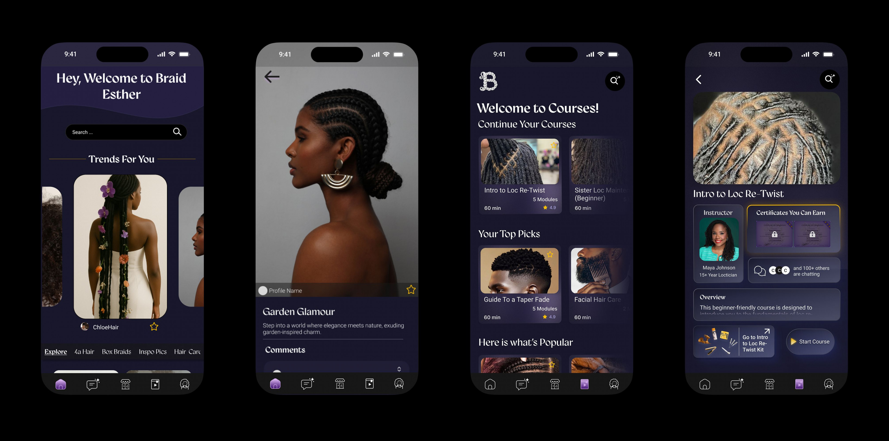
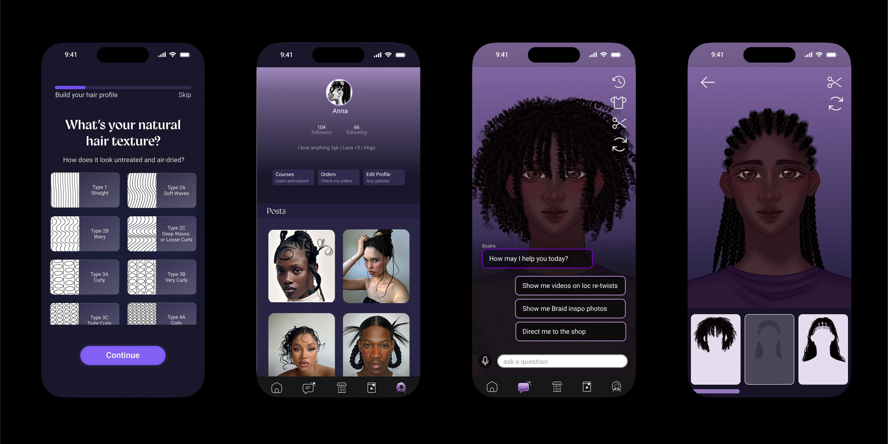
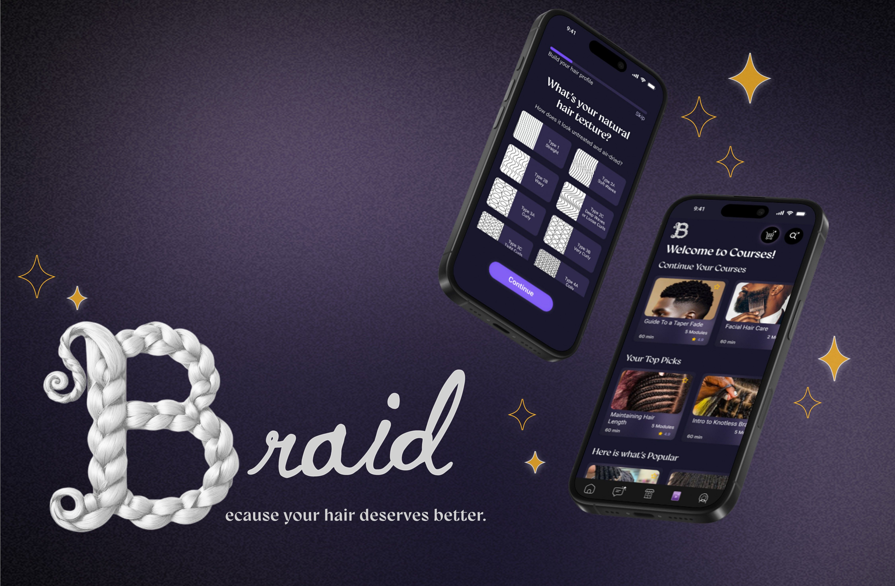

Braid
Knowledge That Shapes Confidence.
Design
Experience
For
Textured Hair
September 2024 - Now

Knowledge That Shapes Confidence.
September 2024 - Now
Now Live · Waitlist Open
Braid is launching to the public soon. Join the waitlist to get early access, product updates, and an invite to try the app before anyone else.
Sign Up for the WaitlistBraid was inspired by the Braid team's shared experience navigating textured hair care and the frustration of having to piece together advice from social media, blogs, and inconsistent product recommendations. There was no single trusted platform that provided personalized guidance for textured hair.

To solve this, the Braid team created Braid, an AI-powered haircare platform designed for people with textured hair. The app helps users identify their hair type, build personalized routines, discover products, and receive step-by-step recommendations tailored to their specific hair goals.


The Braid team led the project from concept to execution by conducting user research, defining the product strategy, designing the UX/UI, and developing the business plan and MVP roadmap. Braid demonstrates the team's ability to transform a real-world problem into a thoughtful, scalable product with a clear market opportunity.


Braid runs on a codified design system — typography, color, gradients, spacing, elevation, glass, and component patterns all live as tokens, so the app stays consistent across every screen and breakpoint.
Next Project
Antix →